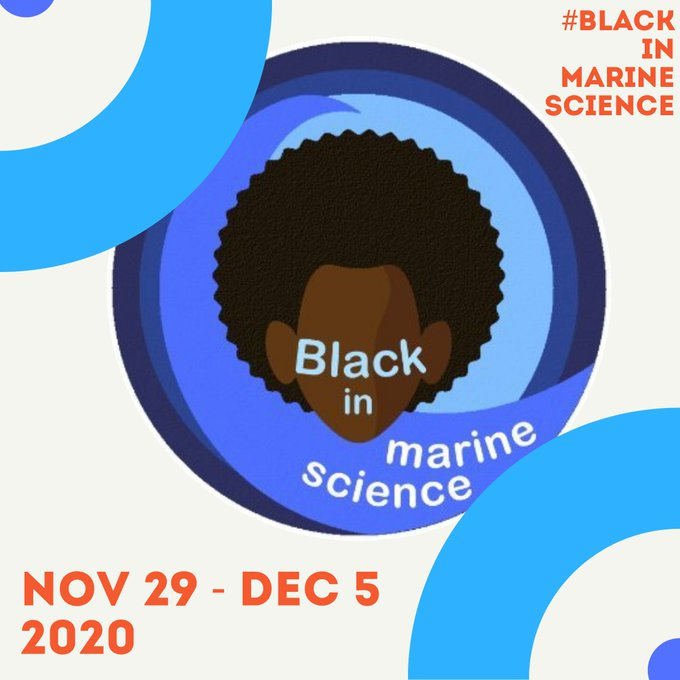

All events are ONE HOUR long, unless otherwise stated
ALL DAY | Post Roll Call Videos
Tweet #BIMSRollCall
4:00pm EST | Instargram Live: Drs. Tiara Moore + Ayana Johnson, “What does Marine Science mean to you?”
Tweet #WhatIsMarineScience
10:00am EST | Water Competency Panel
Tweet #BlackPeopleDoSwim
1:00pm EST | Highlighting LGBTQIA+ Folx in Marine Science
Tweet #OutOfTheWater
1:00pm EST | Skype-A-Scientist with Jaida Elcock
6:00pm - 8:00pm EST | Networking Social + Happy Hour
2:00pm EST | Seattle Aquarium Takeover
Tweet #BlackMarineJoy